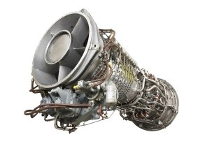

Portfolio
GitHub
Design and Control of an Inverted Pendulum
I developed this Inverted Pendulum system to learn more about control theory, a topic I focused on during my undergraduate degree. My GitHub contains all relevant technical files to reproduce this inverted pendulum. STL files, C code, pinouts, and a BOM are provided. Feel free to reach out with any questions.
Embedded C code was created for LQR, PID, P, and PI control of the inverted pendulum (and written for two different AVR uC's!). Embedded C code was also written for driving a DC motor (interfacing with an H-bridge), and interfacing with the 2 system rotary encoders through the AVR's interrupt service routines.
SolidWorks was utilized for all mechanical design aspects. All 3D printed parts were printed from PLA on an Ender 3 Pro. LabVIEW, MATLAB, and Python were used for data acquisition, simulation, modeling, system identification, and control system design tasks.
I am continuing to work on this project in my spare time. I hope to implement swing up control, Lyapunov stability, and offline trajectory optimization when I have the time. If I had the opportunity to work on this project again, I would have used Simulink to develop the controller. I knew how to program in C prior to this project, so being able to write a bare-metal program was fun, but I would have rather spent more time on the control-theory aspects of this project.
Python Scripts and VBA for Product BOM Management
Self-started project completed as an employee of Edwards Lifesciences
When I was hired on to Edwards Lifesciences in 2018, my project team was tasked with re-working over 750 seperate models within Edwards portfolio. As these scripts were developed for Edwards Lifesciences, I am not able to share them here.
With my programming knowledge, I instantly saw process-improvements that could be made. Our Excel BOMs were inefficient, and required much more manual interaction than required. In order to resolve this, I developed Excel VBA Macros for our team to automate the process of BOM creation and checking.
Later in the project, when running analysis on all 750 of the Excel BOMs was more important, I developed a small library of Python scripts to interact with our Excel BOMs. Throughout the lifetime of the project, there were multiple times where my Python library was able to save my team months of work.
Analysis of General Electric LM2500 G4+DLE Aeroderivative Gas Turbine
GitHub
All MATLAB code written for this project is available at the GitHub link above. Top-level scripts to run, and which would be helpful to understand the organization of the project are "Cycle_Solver_Phase_1.m" and "Cycle_Solver_Phase_2.m". These are the main scripts of the project, and the majority of the other ".m" files house object-oriented MATLAB classes which are used in the top-level scripts. A README has been included to help explain the objects and functions.
This report was a semester long deliverable for a class in advanced thermal fluid systems. The goal of our project was to reverse-engineer many aspects of the G.E. LM2500 G4+DLE gas turbine that was being used within the U.T. power plant. Using measurements taken from the turbine at various inlet airflow temperature's my team succesfully created a MATLAB simulation of the G.E. system. The simulation, once optimized against data measured from the G.E. turbine, was able to calculate the efficiencies of the low and high pressure turbines and compressors located within the system. From this project I furthered my understanding of the difficult thermodynamic and heat transfer processes involved in power generation. My team and I learned how operating temperatures, pressures, mass-flow rates, and device efficiencies affected turbines, compressors, and combustors performance and the operating conditions for effective power generation.
C++ Wave Simulator
GitHub
I started this project with the intention of learning C++. I found Java source code for the simulator, and learned to translate it into highly optimized C++ code. The C++ Code I wrote simulated the shallow water equations, a special solution to the Navier-stokes equations. The simulator uses the equations along with a 3 step Runge-Kutta to iterate through time with varying time steps.
The python program "CFD_CPP_2D.py" makes and runs the C++ program. The C++ program writes text files to a "./out/" directory and then the python program will plot and save png files of the data plots. After all plots have been made, a program called FFmpeg combines all the png files into a gif and avi file.
"CFD_CPP_2D.cpp", "DomainFunctions.cpp", and "FileWriter.cpp" are the main C++ files. The python plotter is named "CFD_CPP_2D.py".